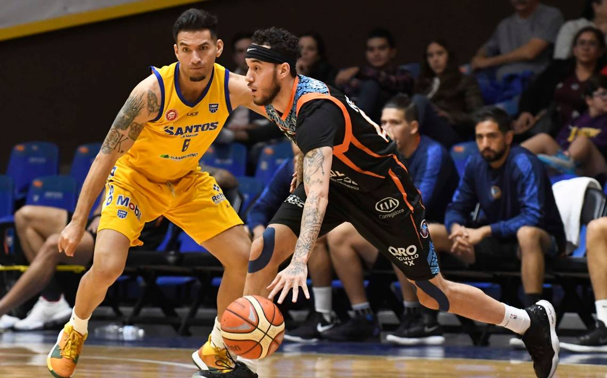
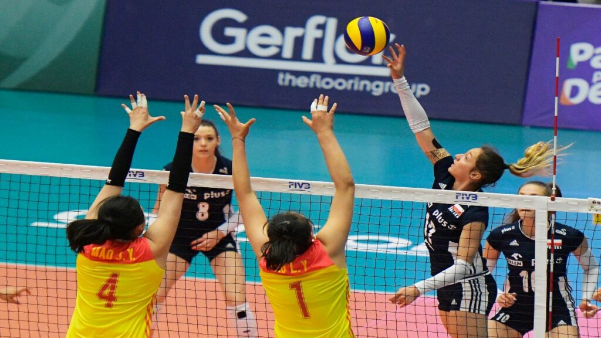
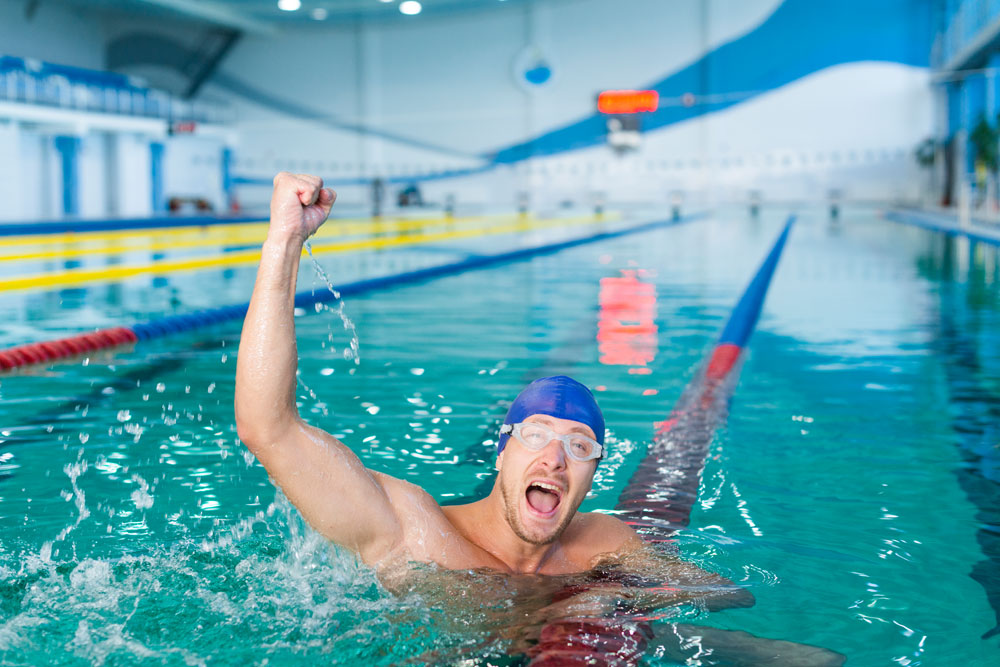

|  | El basquebol me llama la atencion porque es un juego muy divertido, donde puedes brincar, correr, atrapar, etc. Ademas en los equipos profesionales hay buenos jugadores que hacen jugadas increibles, las cuales he querido hacer pero no me salen. |
|---|---|
|  | El voli es uno de mis favoritos, me gusta desde que tengo memoria, lo jugaba con mis amigos y me divertia mucho, pero cansa muy rapido. |
|  | La natacion la practico, es la más cansada que he tenido, conlleva mucha preparacion fisica y mental, pero ayuda bastante ya que te relajas, y te sientes mejor. |